4.22 Examples of conceptual density functional theory (CDFT) analysis¶
Multiwfn manual, p.931–948. Images:
../imgs/.
At the end of this section, it is emphasized that when doing difference analysis of atomic dispersion energy contribution or dispersion density, the number of atoms in the atomic range of interest selected for the two systems must be the same, and the order of the atoms must also be the same, otherwise it is obvious that the dispersion energy contribution by atoms will be confused when taking the difference between the two systems.
4.22 Examples of conceptual density functional theory (CDFT) analysis¶
4.22.1 Automatically calculate conceptual density functional theory quantities for phenol¶
Note: Chinese version of this section is my blog article “Using Multiwfn to easily calculate various quantities defined in the concept density functional theory” (http://sobereva.com/484).
In this section, I will show how to very conveniently calculate almost all quantities defined in the framework of conceptual density functional theory (CDFT). Phenol will be taken as example. Since phenol is a neutral molecule, the N, N+1 and N-1 electrons states correspond to neutral, anionic and cationic states, respectively.
Before following this example, please read Section 3.25 first, in which all quantities to be computed and basic usage are described.
Preparation of needed wavefunction files Phenol at neutral state should be optimized first, please do it yourself. The examples\phenol.xyz is geometry of phenol optimized at the widely used B3LYP/6-31G* level, its quality is fine enough for present study.
Boot up Multiwfn and input below commands: examples\phenol.xyz
Multiwfn session
- 22 — Calculate various quantities in conceptual density functional theory
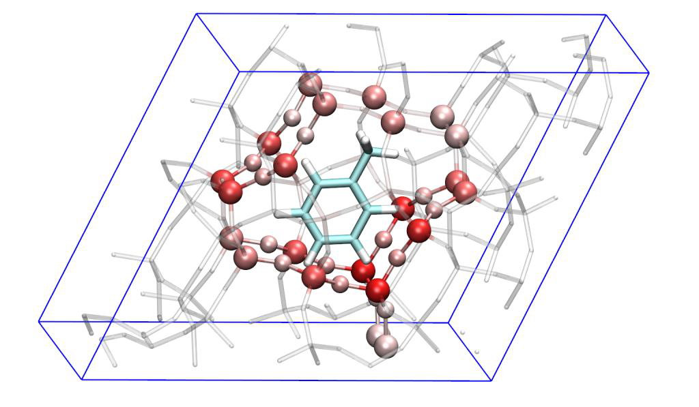
Multiwfn session
- 1 — Generate .wfn files for N, N+1 and N-1 electrons states
- [Press ENTER button directly] — The generated .gjf files will correspond to single point task at B3LYP/6-31G* level
[Press ENTER button directly] // Use default charge and spin multiplicity, namely 0 1 for N state, -1 2 for N+1 state, and 1 2 for N-1 state
Now N.gjf, N+1.gjf and N-1.gjf have been generated in current folder, they are input files of single point task used for generating N.wfn, N+1.wfn and N-1.wfn, respectively. Now you can manually run them by Gaussian. If you do not change the generation path of the .wfn file in these files, after running them they will be generated in current folder for Gaussian of Linux version, while for Windows version they will be generated in Gaussian scratch folder.
You can also let Multiwfn directly invoke Gaussian to run the .gjf files. Assume that we have set "gaupath" parameter in settings.ini to actual path of Gaussian executable file, now you can input y in Multiwfn window, then the .gjf files will be executed by Gaussian and the resulting .wfn files will occur in current folder, after that the .gjf and .out files will be automatically deleted.
Multiwfn is also able to generate input files of ORCA program for generating the .wfn files. To do so, you should select option -2 once, then choose option 1, then three ORCA input files will be generated. After manually running them by ORCA, N.wfn, N-1.wfn, N+1.wfn will be available, and you should move them to Multiwfn folder.
Calculating global and atomic indices Because N.wfn, N+1.wfn and N-1.wfn have already been provided in current folder, now we can start calculation of CDFT quantities. We choose option "2 Calculate various quantitative indices", then Multiwfn starts to calculate Hirshfeld charges and extract information from the .wfn files, the results are outputted to CDFT.txt in current folder. The content is shown below, they are completely self-explanatory. The file has also been provided as examples\CDFT.txt.
Hirshfeld charges, condensed Fukui functions and condensed dual descriptors
Units used below are "e" (elementary charge)
Atom q(N) q(N+1) q(N-1) f- f+ f0 CDD
1(C ) -0.0587 -0.1185 0.0852 0.1439 0.0598 0.1018 -0.0841
2(C ) -0.0390 -0.1674 0.0268 0.0658 0.1284 0.0971 0.0626
3(C ) -0.0597 -0.1873 0.0319 0.0916 0.1276 0.1096 0.0360
...[ignored]
Condensed local electrophilicity/nucleophilicity index (e*eV)
Atom Electrophilicity Nucleophilicity
1(C ) 0.02576 0.45535
2(C ) 0.05533 0.20827
3(C ) 0.05496 0.28982
...[ignored]
Condensed
local
softness
(e/Hartree),
relative
electrophilicity/nucleophilicity
(dimensionless) and condensed local hyper-softness (e/Hartree^2)
Atom s- s+ s0 s+/s- s-/s+ s(2)
1(C ) 0.3761 0.1562 0.2661 0.4154 2.4075 -0.5746
2(C ) 0.1720 0.3355 0.2538 1.9501 0.5128 0.4271
3(C ) 0.2392 0.3333 0.2863 1.3933 0.7177 0.2459
...[ignored]
E(N): -307.464860 Hartree
E(N+1): -307.383614 Hartree
E(N-1): -307.163438 Hartree
E_HOMO(N): -0.218913 Hartree, -5.9569 eV
E_HOMO(N+1): 0.161297 Hartree, 4.3891 eV
E_HOMO(N-1): -0.464864 Hartree, -12.6496 eV
First vertical IP: 0.301421 Hartree, 8.2021 eV
First vertical EA: -0.081246 Hartree, -2.2108 eV
Mulliken electronegativity: 0.110088 Hartree, 2.9956 eV
Chemical potential: -0.110088 Hartree, -2.9956 eV
Hardness (=fundamental gap): 0.382667 Hartree, 10.4129 eV
Softness: 2.613235 Hartree^-1, 0.0960 eV^-1
Softness^2: 6.828998 Hartree^-2, 0.0092 eV^-2
Electrophilicity index: 0.015835 Hartree, 0.4309 eV
Nucleophilicity index: 0.116285 Hartree, 3.1643 eV
You can compare the condensed Fukui functions and dual descriptor shown above with those manually calculated in Section 4.7.3, you can find the data are completely identical. Clearly, using present module to compute the CDFT quantities is by far easier than manual calculation!
Frankly speaking, the outputted values involving energy of N+1 states, such as vertical EA, Mulliken electronegativity and so on are not very accurate, since it is well known that to obtain a relatively accurate energy of anionic system, diffuse functions must be employed. So, if you need better results of these quantities, when you use Multiwfn to prepare input files of Gaussian, it is suggested to choose a basis set at least 6-311+G* level.
Calculating Fukui function and dual descriptor
Next, we study Fukui function (f) and dual descriptor (\(\Delta f\)), which are real space functions. Choose option "3 Calculate grid data of Fukui function, dual descriptor and related functions ", and then select "2 Medium-quality grid", then Multiwfn automatically calculates grid data of electron density for N, N+1 and N-1 states. After that, you can choose corresponding option to visualize Fukui function or dual descriptor, or export them as cube files in current folder. Various types of f
\(\Delta f\) plotted by Multiwfn are collectively given in the following graph, all isovalues are set to 0.007 a.u.:
From the map above, you can find the f and Δf automatically generated by present module are identical to those manually yielded in Section 4.5.3 by means of custom operation feature of main function 5. Undoubtedly using present module is much more convenient!
As mentioned in Section 4.5.4, the dual descriptor can also be approximately evaluated based on spin density of N-1 and N+1 states, however in the present module, the dual descriptor as well as its condensed form are evaluated in exact way.
It is worth to note that if we export the grid data as cube file by corresponding option, then we can use the method described in Section 4.A.14 to very quickly and easily plot above functions as
isosurface map by VMD at state-of-the-art quality. For example, below is the \(\Delta f\) function rendered by VMD.
Calculating local (hyper-)softness and local electrophilicity/nucleophilicity index The module illustrated above can also be used to export or visualize local softness, local hyper-softness, local electrophilicity index and local nucleophilicity index.
For example, we will export cube file of local electrophilicity index, recall that its definition is simply multiplying f + by global electrophilicity index. Therefore, we select option "-1 Set the scale
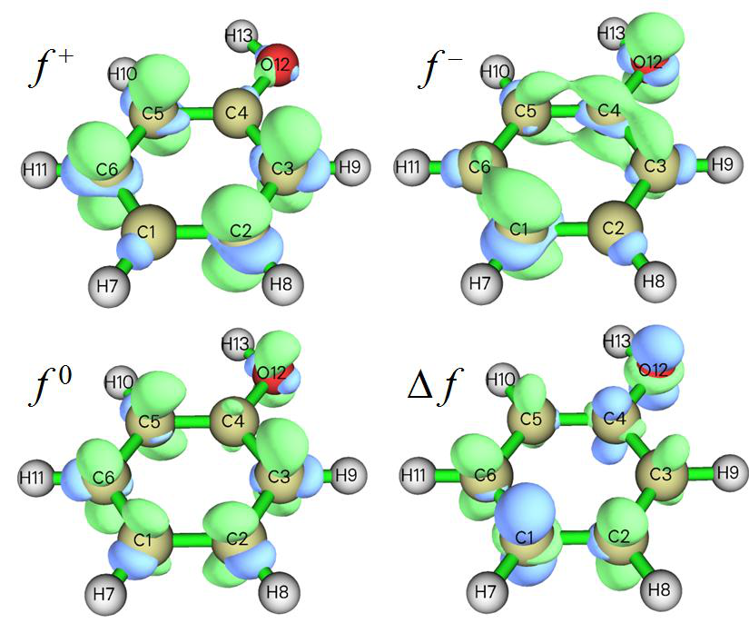
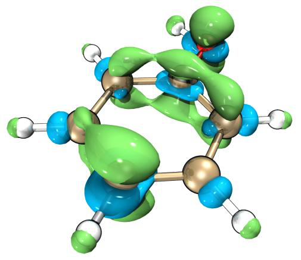
factor to various grid data", input 0.4309 (which is the global electrophilicity index in eV outputted by option 2, see CDFT.txt), then select option "5 Export grid data of scaled f+ as f+.cub in current folder". Now, the exported f+.cub corresponds to local electrophilicity index, the unit is eV/Bohr3.
Next example, we will export cube file of local hyper-softness (LHS), whose definition and practical value are carefully discussed in J. Math. Chem., 62, 461 (2024). It can be simply evaluated
by multiplying \(\Delta f\) with square of global softness. Therefore, we select option "-1 Set the scale factor to various grid data" and input 6.828998 (which is the softness2 in Hartree-2 outputted by option 2, see the aforementioned CDFT.txt), then select option "5 Export grid data of scaled dual descriptor as DD.cub in current folder". Now, the exported DD.cub corresponds to LHS, the unit is 1/(Bohr3Hartree2) or simply a.u.
Calculation of \(\omega_{cubic}\) and ε As described in Section 3.25, the electrophilicity index ωcubic is useful in studying weak interaction, at least for halogen bonds, and electrophilic descriptor ε is a quantity correlates with electrophilicity better than ω. If you also want to calculate them, after entering the present module you should select option -1 first to switch its status to "Yes", then simply follow the example shown above (i.e. prepare .wfn files with the aid of option 1, then use option 2 to perform calculation), then
the CDFT.txt outputted by option 2 will contain \(\omega_{cubic}\), its condensed value on every atom, as well as ε. An intermediate quantity, namely the second vertical ionization potential, is also printed.
More specifically, for the present example, after entering the present module you should input
Multiwfn session
- -1 — Toggle calculating \(\omega_{cubic}\) and ε
- 1 — Generate .wfn files for N, N+1, N-1, N-2 electronic states [Press ENTER button directly]
Use default charge and spin multiplicity, namely 0 1 for N state, -1 2 for N+1 state, 1 2 for N-1 state, 2 1 for N-2 state
Now run the newly generated four .gjf files to obtain N.wfn, N+1.wfn, N-1.wfn and N-2.wfn, then choose option 2. From the outputted CDFT.txt, you can find:
Cubic electrophilicity index (w_cubic): 0.021716 Hartree, 0.5909 eV
Electrophilic descriptor (epsilon): 0.080522 Hartree, 2.1911 eV
4.22.2 Illustration of studying orbital-weighted Fukui function and orbital-weighted dual descriptor¶
Note: Chinese version of this section with extended discussions and more examples is my blog article “Prediction of nucleophilic and electrophilic reaction sites by orbital-weighted Fukui function and orbital-weighted dual descriptor” (http://sobereva.com/533).
Please read Section 3.25.3 first, in which orbital-weighted Fukui function (𝑓𝑤+ and 𝑓𝑤−) and dual descriptor \(\Delta f_{w}\) are introduced, also some important notes are given. In this section we will use these functions to study several systems.
Part 1: C60 In this part we will use the orbital-weighted functions to reveal reactive sites of C60, which has high point group symmetry and its frontier molecular orbitals are highly degenerate. Molecules like this are unable to be reasonably studied via the Fukui function and dual descriptor in standard form. The .fch file of this system generated at B3LYP/6-31G* level can be downloaded at
http://sobereva.com/multiwfn/extrafiles/C60.zip, which is input file of the present analysis.
Boot up Multiwfn and input below commands C60.fch
Multiwfn session
- 22 — Calculate various quantities in conceptual density functional theory
In the current menu, you can use option 4 to set the Δ parameter used in the subsequent orbital-weighted calculations, in this example we keep the default value (0.1 Hartree) unchanged, it should be properly changed only when you find the result is not satisfactory.
We first visualize isosurface of the orbital-weighted functions. Input below commands
Multiwfn session
- 7 — Calculate grid data of OW Fukui function and OW dual descriptor
- 2 — Medium quality Then you can use corresponding option to visualize isosurfaces of 𝑓𝑤+, 𝑓𝑤−, 𝑓𝑤0 and ∆𝑓𝑤, which are collectively shown below. Note that isovalue should be changed to proper value, otherwise isosurfaces may be even invisible. Isosurface of 0.0003 a.u. is used to plot the maps below.
In the map above, green and blue isosurfaces represent positive and negative parts, respectively. As you can see, distributions of all orbital-weighted functions are in line with molecular point group symmetry, this is a unique advantage of the orbital-weighted form. In contrast, if you plot density
of HOMO (corresponding to frozen orbital form of f −) or calculate and plot f − via finite difference (ρN − ρN-1), you will find their distributions are counterintuitive (inconsistent with molecular symmetry) and thus useless in revealing reactive sites. As introduced in Section 4.5.4, a region with
large positive f − or with prominent negative Δf corresponds to the site having remarkable nucleophilicity, or equivalently, vulnerable to electrophilic attack. From the map above we can find that the sites with highest tendency of undergoing electrophilic attack are the regions above [6,6] type of C-C bond (i.e. the bond shared by two adjacent six-membered rings). This observation is fully in line with experimental findings (see original paper of ∆𝑓𝑤, namely J. Phys. Chem. A, 123, 10556 (2019), for extensive discussion), and this conclusion can also be further confirmed according to distribution of minima of average local ionization energy over vdW surface, see Section 4.12.2 on how to perform this kind of analysis.
The orbital-weighted form of Fukui function and dual descriptor are contributed by multiple orbitals. If you want to check weights to better understand how the orbital-weighted functions work, in the present module you can choose "5 Print current orbital weights used in orbital-weighted (OW) calculation", then you will see
10 Highest weights in orbital-weighted f+
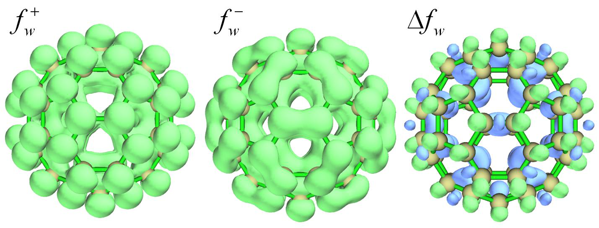
Orbital 181 (LUMO ) Weight: 12.47 % E_diff: 1.752 eV
Orbital 182 (LUMO+1) Weight: 12.47 % E_diff: 1.752 eV
Orbital 183 (LUMO+2) Weight: 12.47 % E_diff: 1.752 eV
Orbital 184 (LUMO+3) Weight: 6.32 % E_diff: 2.847 eV
Orbital 185 (LUMO+4) Weight: 6.32 % E_diff: 2.847 eV
Orbital 186 (LUMO+5) Weight: 6.32 % E_diff: 2.847 eV
Orbital 187 (LUMO+6) Weight: 4.70 % E_diff: 3.207 eV
Orbital 188 (LUMO+7) Weight: 4.70 % E_diff: 3.207 eV
Orbital 189 (LUMO+8) Weight: 4.70 % E_diff: 3.207 eV
10 Highest weights in orbital-weighted f-
Orbital 180 (HOMO ) Weight: 9.06 % E_diff: -1.752 eV
Orbital 179 (HOMO-1) Weight: 9.06 % E_diff: -1.752 eV
Orbital 178 (HOMO-2) Weight: 9.06 % E_diff: -1.752 eV
Orbital 177 (HOMO-3) Weight: 9.06 % E_diff: -1.752 eV
Orbital 176 (HOMO-4) Weight: 9.06 % E_diff: -1.752 eV
Orbital 175 (HOMO-5) Weight: 5.02 % E_diff: -2.728 eV
Orbital 174 (HOMO-6) Weight: 5.02 % E_diff: -2.728 eV
Orbital 173 (HOMO-7) Weight: 5.02 % E_diff: -2.728 eV
Orbital 172 (HOMO-8) Weight: 5.02 % E_diff: -2.728 eV
Orbital 171 (HOMO-9) Weight: 5.02 % E_diff: -2.728 eV
The "E_diff" is the difference between orbital energy and the chemical potential approximately evaluated as average of E(HOMO) and E(LUMO). Evidently, the more the orbital energy close to the chemical potential, the higher weight the orbital will have.
You can also calculate condensed 𝑓𝑤+, 𝑓𝑤−, 𝑓𝑤0 and \(\Delta f_w\), so that you can easily study their values at each atomic site quantitatively. To do so, in the present module you should choose "6 Calculate condensed OW Fukui function and OW dual descriptor". However, these condensed quantities are meaningless for the C60 we studied above, since all atoms are spatially equivalent.
It is worth to note in passing that extrema of 𝑓𝑤+, 𝑓𝑤−, 𝑓𝑤0 and \(\Delta f_w\) on molecular surface can be exactly located via quantitative molecular surface analysis module, so that one can quantitatively compare their values in different regions. Many examples of using this module have been given in
Section 4.12. Below we will examine extrema of \(\Delta f_w\) on ρ = 0.01 a.u. isosurface. First, we set "iuserfunc" parameter in settings.ini to 98, since as mentioned in Section 2.7, ∆𝑓𝑤 corresponds to the 98th user-defined function. Then boot up Multiwfn and input
Multiwfn session
- C60.fch 12 — Quantitative analysis of molecular surface
- 1 — Select the way to define surface
- 1 — Isosurface of electron density
Multiwfn session
- 0.01 — Use ρ = 0.01 a.u. isosurface to define the surface
- 2 — Select mapped function
- -1 — User-defined real space function, which now corresponds to \(\Delta f_w\)
- 3 — Spacing of grid points for generating molecular surface
0.25 // Use slightly larger grid spacing than default to reduce cost. This setting is already fine enough for present investigation
0 // Start analysis After the calculation is complete, select option 0 in post-processing menu to visualize extrema. In order to make the graph clear, we change the "Ratio of atomic size" in GUI to 3.0 to enlarge atomic spheres. The graph in the GUI window is shown below. Value of a few minima (blue spheres) \(\Delta f_{w}\) are labelled, the values can be found from text window. The red spheres correspond to maxima.
As can be seen, the \(\Delta f_{w}\) above [6,6] bond is remarkably more negative compared to other areas, thus these positions have highest reactivity for electrophilic reaction. Although there are also surface minima above center of each five-membered ring, the value is slightly positive, therefore the five-membered ring does not have evident tendency to participate in electrophilic reaction.
Part 2: Cyclo[18]carbon The cyclo[18]carbon was very systematically studied in my work Carbon, 165, 468 (2020), Carbon, 165, 461 (2020) and http://sobereva.com/carbon_ring.html for more. This system has high symmetry (D9h) and is thus very suitable to be studied via the orbital-weighted functions. The .fchk of this system can be directly downloaded via http://sobereva.com/multiwfn/extrafiles/C18.zip,
which was generated at ωB97XD/def2-TZVP level. The isosurface \(\Delta f_{w}\) =0.0008 a.u. of this system is shown below.
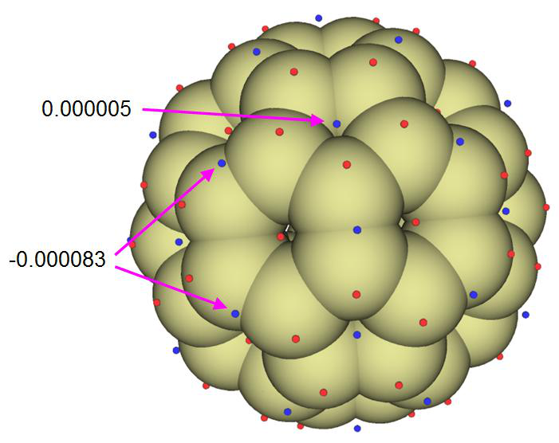
The cyclo[18]carbon contains two kinds of C-C bond, a short one and a long one, they occur alternatively. Two short bonds are highlighted by red arrows. From the map above it can be clearly seen that the short and long C-C bonds are vulnerable to electrophilic and nucleophilic attacks, respectively, since the former are enclosed by negative isosurfaces while the latter are enclosed by positive isosurfaces.
In Multiwfn, it is also possible to plot \(\Delta f_{w}\) as plane map. As an example, we will plot ∆𝑓𝑤 as color-filled map on the molecular plane of the cyclo[18]carbon. We first set "iuserfunc" parameter in settings.ini to 98, then boot up Multiwfn and input
Multiwfn session
- C18.fchk 4 — Plot plane map
- 100 — User-defined real space function, which now corresponds to \(\Delta f_{w}\)
- 1 — Color-filled map [Press ENTER button to use default grid setting]
- 1 — XY plane 0
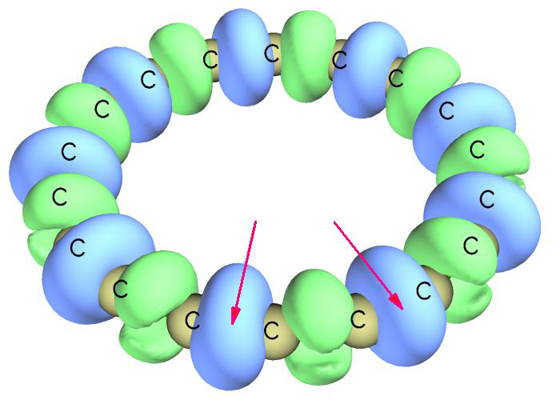
From the map above we can find that the inner edge of the ring is more reactive than the outer edge, since inner edge has larger magnitude of \(\Delta f_{w}\).
Part 3: CH3Cl Finally, we employ \(\Delta f_{w}\) to study reactivity of CH3Cl. The input file is examples\CH3Cl.fchk. We calculate grid data of ∆𝑓𝑤 using the same way as the examples above, however, in order to get better graphical effect, this time we do not visualize isosurface in Multiwfn directly, but export grid data of ∆𝑓𝑤 as OW_DD.cub via corresponding option, then use the method described in Section 4.A.14 to easily render it as isosurface map via VMD program. The isosurface of 0.008 a.u. is shown below.
As can be seen, the toroidal negative region appears around the Cl atom, implying that this region shows Lewis-base character. At the two ends of C-Cl bond the \(\Delta f_{w}\) is notably positive, showing that the end of carbon site is vulnerable to nucleophilic attack (e.g. SN2 reaction), while
the end of Cl site behaves as Lewis-acid, which is in line with the fact that there is a σ-hole region.
By the way, you can also study extrema of \(\Delta f_{w}\) on molecular surface like the example of C60 to make discussion of ∆𝑓𝑤 at quantitative level.
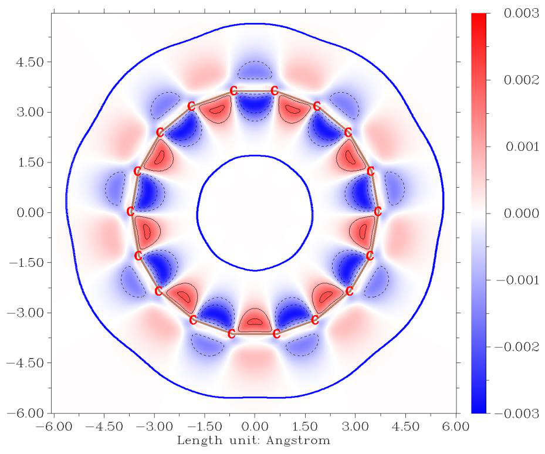
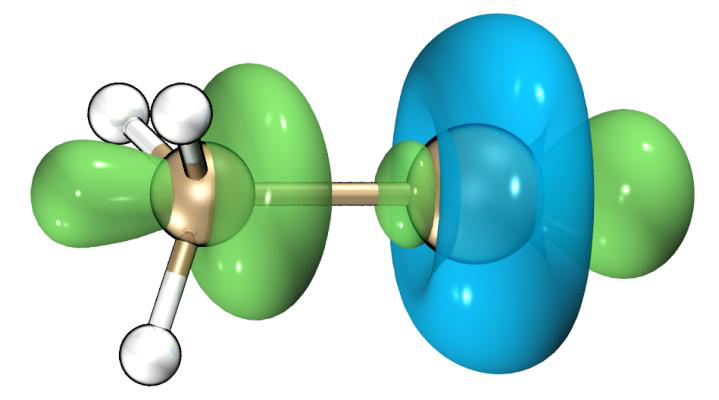
4.22.3 Examples of CDFT analysis in (quasi-)degenerate
HOMO/LUMO case¶
As described in Section 3.25.4, aside from employing orbital-weighted form, Multiwfn also supports another form to perform CDFT analysis when HOMO and/or LUMO are (quasi-)degenerate. This form solely relies on electron density and thus theoretically more rigorous than the orbital-weighted form, at the expense of additional computational effort since wavefunction files of N+p and N-q states should also be calculated, where p and q are degeneracy of LUMO and HOMO, respectively. Next, I will give two examples.
4.22.3.1 Fukui function and dual descriptor of benzene
In this section I will take benzene as an example to illustrate calculating Fukui function and dual descriptor with consideration of HOMO/LUMO degeneracy. Because we need to determine the degeneracy based on orbital energies, therefore we should first generate a wavefunction file for the studied structure. examples\benzene.fch is the wavefunction file produced by geometry optimization task at B3LYP/6-31G* level by Gaussian 16.
Boot up Multiwfn and input examples\benzene.fch
Multiwfn session
- 22 — Calculate various quantities in conceptual density functional theory
- -3 — Set degree of frontier molecular orbital degeneracy Now information of lowest 10 unoccupied MOs are shown on screen to help you determine LUMO degeneracy
...[ignored]
Orbital 25 (LUMO+3) Energy: 3.838 eV E_diff: 3.737 eV
Orbital 24 (LUMO+2) Energy: 2.346 eV E_diff: 2.246 eV
Orbital 23 (LUMO+1) Energy: 0.100 eV E_diff: 0.000 eV
Orbital 22 (LUMO ) Energy: 0.100 eV
From the orbital energies it is clear that LUMO and LUMO+1 are exactly degenerate, while LUMO+2 has a significantly higher energy, therefore the degree of LUMO degeneracy is 2. So, we input 2 here (Note that Multiwfn prompts you that if you directly press ENTER button here, degeneracy of 2 will be used. This is because Multiwfn determines the degeneracy of LUMO by counting how many unoccupied orbital energies differ from LUMO by less than 0.01 eV).
Then information of highest 10 occupied MOs are shown on screen:
Orbital 21 (HOMO ) Energy: -6.720 eV
Orbital 20 (HOMO-1) Energy: -6.720 eV E_diff: 0.000 eV
Orbital 19 (HOMO-2) Energy: -9.234 eV E_diff: -2.514 eV
Orbital 18 (HOMO-3) Energy: -9.234 eV E_diff: -2.514 eV
...[ignored]
It is found that HOMO and HOMO-1 have exactly identical energy, therefore now we input 2 to indicate that HOMO degeneracy is 2 (you can also press ENTER button directly to use the automatically determined degeneracy of 2).
Next, you can manually use your favourite quantum chemistry program to generate wavefunction file of N, N+2 and N-2 states. For convenience, here we let Multiwfn help us prepare the input files. Input the following commands:
1 // Single point input files of Gaussian for generating .wfn files for N, N+2, N-2 states will be prepared (If you are an ORCA user, you can choose option -2 to change to ORCA program before selecting this option)
[Press ENTER button] //Use the default B3LYP/6-31G* level for single point calculation [Press ENTER button] //As mentioned in prompt, pressing ENTER button directly will use net charge and spin multiplicity of (0 1), (-2 3) and (2 3) for the N, N+2 and N-2 states, respectively. These combinations are reasonable for present case
Because currently N+1 and N-1 states have not been defined, while E(N+1) and E(N-1) are needed for calculating first VIP, VEA and their related quantities such as softness in option 2, so Multiwfn also asks you to input net charge and spin multiplicity for the two states. However, in this example we only want to calculate Fukui function and dual descriptor, which are independent of these energetic quantities, so we press ENTER button twice to skip definition of the two states.
Now N.gjf, N+2.gjf and N-2.gjf have been generated in current folder, you can manually use Gaussian to run them, or directly input y to let Multiwfn invoke the Gaussian on your machine to run them (in this case that the “gaupath” in settings.ini have been correctly defined). Once calculations are all finished, you will have N.wfn, N+2.wfn and N-2.wfn in current folder.
Then we plot isosurface map of Fukui function and dual descriptor with consideration of HOMO and LUMO degeneracy. Input the following commands
3 // Calculate grid data of Fukui function and dual descriptor (if N.wfn, N+2.wfn and N-2.wfn are not present in current folder, Multiwfn will ask you to input path of wavefunction files of the three states)
2 // Medium-quality grid
2 // Visualize isosurface of \(\Delta f\) After changing isovalue to 0.005 a.u., you will see the following map
From the map above it can be seen that the distribution of \(\Delta f\) with consideration of HOMO degeneracy, namely (ρN − ρN-2)/2, is fully in line with molecular symmetry. The positive regions (exhibited by green isosurfaces) mainly occur above and below the molecular plane at carbon atoms,
thus correctly indicating that the π-electron cloud is easy to undergo electrophilic attack. In contrast, if you plot \(\Delta f\) in usual way, namely ρN − ρN-1, you will find its distribution obviously violates the actual molecular symmetry and thus leads to misleading conclusion about preferential site of electrophilic attack.
Similarly, you can use options 1, 3 and 4 to visualize isosurface map of f +, f 0, and dual
descriptor Δf calculated under consideration of frontier MO degeneracy, respectively.
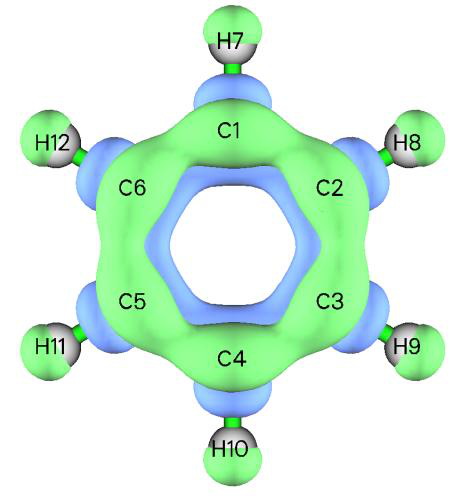
Notice about the choice of calculation level for f + and dual descriptor For the benzene system, if you use B3LYP with a basis set containing diffuse functions (e.g. 6-311+G*) to generate wavefunction files, you will find distribution of the calculated
(quasi-)degenerate \(\Delta f\) is extremely diffuse (showing strong Rydberg character) and not completely in line with molecular symmetry. This is because the severe self-interaction error (SIE) problem of this functional makes the electrons at the N+2 state over-diffuse, while the current basis set has capability of representing spatial regions far from the molecule. In this case, the resulting f +
\(\Delta f\) are not well-behaved and cannot be used to discuss preferential reactive sites.
It is worth to note that in Chem. Phys. Lett., 724, 29 (2019), it was found that if Fukui function and dual descriptor are evaluated based on finite difference (the same as the present case), then even a 3-zeta basis set without diffuse functions can basically result in a meaningful dual descriptor.
Despite that the B3LYP/6-31G* level, as what we employed in the present example, yields
seemingly reasonable \(\Delta f\) distributions, if you pursue a more rigorous result, I would like to recommend using a long-range corrected DFT functionals such as ωB97XD with a 3-zeta basis set without diffuse functions, e.g. 6-311G*. The ωB97XD suffers much weaker SIE problem than the popular B3LYP, therefore the electrons are more tightly bounded at anionic state; the 3-zeta basis set with no diffuse function represents valence electronic structure adequately, while electrons are
forced to be bounded within valence region, guaranteeing that \(\Delta f\) only represent the region of chemical interest.
4.22.3.2 Local softness and local hyper-softness of C60 fullerene
In this section I will illustrate calculation of local softness and local hyper-softness of C60
fullerene. They are presented in J. Math. Chem., 62, 461 (2024) at ωB97XD/6-311+G level, but in this section, we use 6-311G instead to greatly save computational cost. The .fchk file
(C60_wB97XD_opt.fchk) file produced by geometry optimization at ωB97XD/6-311G* level by Gaussian 16 can be downloaded at http://sobereva.com/multiwfn/extrafiles/C60_wB97XD_opt.7z.
Boot up Multiwfn and input C60_wB97XD_opt.fchk
Multiwfn session
- 22 — Calculate various quantities in conceptual density functional theory
- -3 — Set degree of frontier molecular orbital degeneracy
- [Press ENTER button directly] — Use automatically determined LUMO degeneracy of 3
- [Press ENTER button directly] — Use automatically determined HOMO degeneracy of 5
- 1 — Generate .wfn files for various electrons states
- wB97XD/6-311G* symm=loose scf=conver=7 — Keywords for performing single point task of Gaussian.
The “symm=loose” ensures that Gaussian will utilize Ih point group of C60 to greatly reduce cost. “scf=conver=7” slightly loosens SCF convergence threshold to make it easier to reach
[Press ENTER button] //Use default net charge and spin multiplicity of (0 1), (-3 4) and (5 6) for the N, N+3 and N-5 states, respectively
Multiwfn session
- -1,2 — Net charge and spin multiplicity of N+1 state
- 1,2 — Net charge and spin multiplicity of N-1 state Now N.gjf, N-1.gjf, N+1.gjf, N-3.gjf and N+5.gjf have been generated in current folder, input y to let Multiwfn invoke Gaussian to perform calculation (or manually calculate them). After calculations, you will find N.wfn, N-1.wfn, N+1.wfn, N-3.wfn and N+5.wfn in current folder.
Then choose option 2 to calculate various CDFT quantities and print them to CDFT.txt in current folder. From which we find softness and its square:
Softness: 4.638426 Hartree^-1, 0.1705 eV^-1
Softness^2: 21.514996 Hartree^-2, 0.0291 eV^-2
Next, input following commands to obtain local hyper-softness, which is product of square of softness and dual descriptor
Multiwfn session
- 3 — Calculate grid data of Fukui function, dual descriptor and related functions
- -10 — Set extension distance
- 6 — 6 Bohr, which is slightly larger than the default one to avoid isosurface truncation at box boundary when isovalue is set to a small value
3 // Since C60 is not small, we use high-quality grid to guarantee that grid spacing will not be too large and thus leading to poor isosurface map
Multiwfn session
- -1 — Set the scale factor to various grid data
- 21.514996 — Square of softness in Hartree-2
- 8 — Export grid data of scaled dual descriptor as DD.cub in current folder Now the newly generated DD.cub in current folder corresponds to local hyper-softness with unit of 1/(Bohr3Hartree2). Plotting it as isosurface map with isovalue of 0.001 via VMD, you will see the following map, which is basically exactly the same as Fig. 4 of J. Math. Chem., 62, 461 (2024), though the current basis set 6-311G is different to the much more expensive 6-311+G employed in that work. Also, it is noteworthy that the main characteristic of this map is comparable with the ∆𝑓𝑤 of C60 obtained in Section
Via similar way, we can obtain local softness, which is defined as product of softness and Fukui function. Input following commands
Multiwfn session
- -1 — Set the scale factor to various grid data
- 4.638426 — Softness in Hartree-1
- 6 — Export grid data of scaled f- as f-.cub in current folder
Now the newly generated f-.cub in current folder corresponds to local softness s−, with unit of 1/(Bohr3Hartree). The following maps are the 0.005 and 0.003 isosurface of s− plotted by VMD, the former is identical to Fig. 2 of J. Math. Chem., 62, 461 (2024), while the latter is clearer to distinguish the bonds easiest to undergo electrophilic attack (i.e. the bonds shared by two six-membered rings), and it looks very analogous to the 𝑓𝑤− map of C60 in Section 4.22.2.
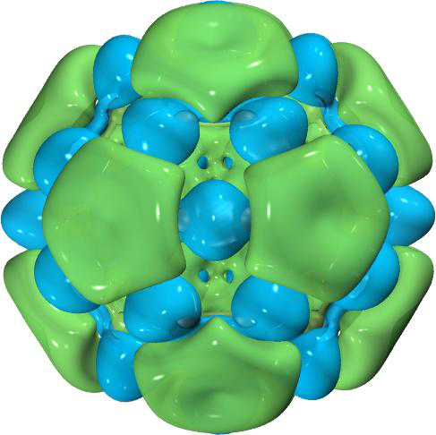
4.22.3.3 Fukui function and dual descriptor of an open-shell molecule, O2
Please read Section 3.25.4.2 first to familiarize yourself with the working equations for evaluating Fukui function and dual descriptor of various forms for open-shell cases. In this example we calculate the functions for O2, which is a representative open-shell molecule (triplet ground state) with degeneracy in frontier MOs.
Boot up Multiwfn and input:
Multiwfn session
- examples\O2.fch — Wavefunction file of ground state O2 at B3LYP/6-31G* level
- 22 — Calculate various quantities in conceptual density functional theory
- 12 — Calculate Fukui function and dual descriptor based on formalism of conceptual spin-polarized DFT
1 // Set degeneracy of frontier molecular orbitals
Multiwfn session
- [Press ENTER button directly] — Use suggested degeneracy of LUMO(α)
- [Press ENTER button directly] — Use suggested degeneracy of HOMO(α)
- [Press ENTER button directly] — Use suggested degeneracy of LUMO(β)
- [Press ENTER button directly] — Use suggested degeneracy of HOMO(β)
Now you can see the summary of degeneracy of frontier MOs:
Degeneracy of LUMO(alpha): 1
Degeneracy of HOMO(alpha): 2
Degeneracy of LUMO(beta): 2
Degeneracy of HOMO(beta): 2
Next, we input 2 //Generate .wfn files for various electrons states [Press ENTER button directly] // Use the default B3LYP/6-31G* as computational level for generating Gaussian input files
Now you will find state0_3.gjf, state-1_4.gjf, state-2_1.gjf, state2_1.gjf, and state2_5.gjf have been generated in current folder, they are Gaussian input file of single point task for generating .wfn file of various electronic states that involved in our present study. For example, state-1_4.gjf corresponds to net charge of -4 with spin multiplicity of 4. If you have Gaussian installed on your local machine, you can input y to ask Multiwfn to invoke Gaussian to calculate all of them; alternatively, manually calculate them by Gaussian, then put the resulting .wfn files into current folder.
Now choose option 3 and select medium-quality grid to start calculating grid data of electron
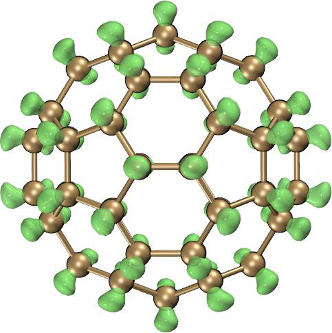
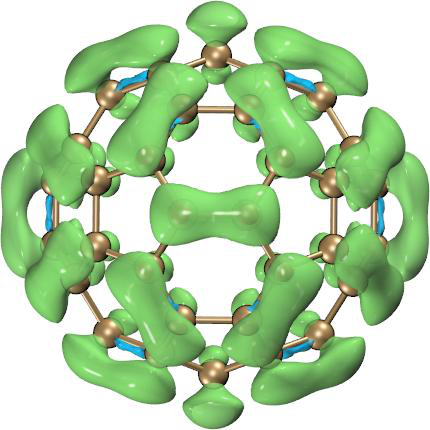
density of different states. After that, in the post-processing menu, choose to visualize the real space function of your interest as isosurface map, or export grid data as .cub file. For example, we choose option 7 to plot dual descriptor of Δ𝑓Δ𝑁𝑆<0 form, after changing isosurface to 0.0005 a.u. and set
material as transparent, you will see the following map, which is exactly the same as DUAL-UDFT case in Fig. 7 of Chem. Phys. Lett., 506, 104 (2011).
4.22.4 Example of plotting Fukui potential and dual descriptor potential¶
This example illustrates plotting Fukui potential and dual descriptor potential for maleic anhydride, the latter is also given in J. Math. Chem., 62, 1094 (2024) and it was calculated at M06-2X/6-311++G(d,p) level, so we will use the same level to reproduce that result. If you are not familiar with these two potentials, please check Section 3.25.1 first.
Boot up Multiwfn and input examples\maleic_anhydride.xyz //Geometry was optimized at M06-2X/6-311++G(d,p) level
Multiwfn session
- 22 — Conceptual DFT (CDFT) analysis
- 1 — Generate .wfn files for N, N+1, N-1 electrons states M062X/6-311++G(d,p)
Use (0 1), (-1 2) and (1 2) for N, N+1 and N-1 states
Multiwfn session
- y — Invoke Gaussian to calculate the three states (assume that you have properly set “gaupath” in
settings.ini)
Multiwfn session
- 9 — Calculate grid data of Fukui potential and dual descriptor potential
- 1 — Because calculating ESP grid data is relatively expensive, so here we choose to use low-quality grid
Now, you can choose corresponding options to visualize various kinds of Fukui potential and dual descriptor potential (DDP), the isosurface maps of 𝑉𝑓+, 𝑉𝑓−, and 𝐷𝐷𝑃= 𝑉𝑓+ −𝑉𝑓− are shown
below, positive and negative parts are shown as green and blue, respectively. The DDP map is in perfect agreement with Fig. 5 of J. Math. Chem., 62, 1094 (2024). The green part of the DDP map indicates that C4 and C5 are most susceptible to undergo nucleophilic attack. Experimentally, it is known that these two atoms of maleic anhydride can undergo D-A addition reaction with the nucleophilic cis-1,3-butadiene.
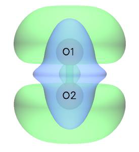
4.22.5 Examples of calculating bond dual descriptor (BDD)¶
Note: Using Multiwfn to calculate bond dual descriptor to study reactivity of different chemical bonds” (http://sobereva.com/766).
Please read the brief introduction to bond dual descriptor (BDD) in Section 3.25.1 first, and read Section 4.22.1 to understand the basic use of the conceptual DFT analysis module. In this section I will illustrate the calculation of BDD for acrylonitrile, the structure optimized at B3LYP/6-31G* level is shown below, and the structure file is examples\acrylonitrile.xyz.
Boot up Multiwfn, load examples\acrylonitrile.xyz, then input
Multiwfn session
- 22 — Conceptual DFT (CDFT) analysis
- 1 — Generate .wfn files for N, N+1, N-1 electrons states [Press ENTER button directly]
[Press ENTER button directly] // Use default charge and spin multiplicity, namely 0 1 for N state, -1 2 for N+1 state, and 1 2 for N-1 state
Then run the N.gjf, N-1.gjf, N+1.gjf in current folder either by Gaussian manually or asking Multiwfn to invoke Gaussian to calculate them, then you will have N.wfn, N-1.wfn, and N+1.wfn in current folder. Then select option “10 Calculate bond dual descriptor (BDD)”. After that, Multiwfn loads the .wfn files and calculate fuzzy bond order for each electronic state in turn, and then BDD are printed, see below. For ease of study, only 10 most positive and negative values are directly given.
10 most negative BDD values:
1(C ) 3(C ): -0.562
6(C ) 7(N ): -0.365
3(C ) 7(N ): -0.029
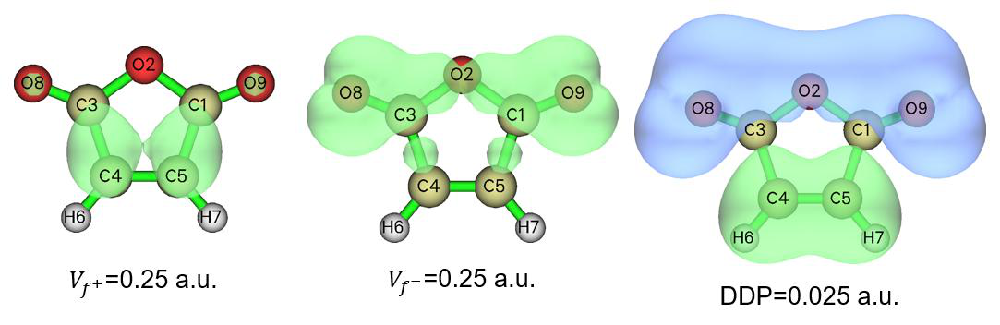
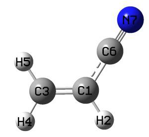
1(C ) 4(H ): -0.008
1(C ) 5(H ): -0.008
4(H ) 7(N ): -0.001
4(H ) 5(H ): -0.000
5(H ) 7(N ): -0.000
2(H ) 4(H ): 0.000
10 most positive BDD values:
1(C ) 6(C ): 0.312
1(C ) 7(N ): 0.166
3(C ) 6(C ): 0.064
3(C ) 5(H ): 0.016
3(C ) 4(H ): 0.016
2(H ) 6(C ): 0.006
2(H ) 7(N ): 0.004
5(H ) 6(C ): 0.003
4(H ) 6(C ): 0.003
1(C ) 2(H ): 0.001
The results above show that C1-C3 is the bond most susceptible to electrophilic attack (the bond shows strongest nucleophilicity), followed by C6-N7. C1-C6 is the bond most susceptible to nucleophilic attack (the bond shows strongest electrophilicity). Some data given above do not correspond to directly bonded atoms, such as C1-N7 and C3-C6; these can be simply ignored.
Multiwfn then asks if you want to export the BDDs of all bonds in atomic number order to BDD.txt in the current directory, and to export the BDDs of all bonds sorted by numerical value to BDD_sorted.txt in the current directory. You can select y to export.
Note that the BDD calculation function also supports the case when frontier molecular orbitals are degenerated, just like the situation illustrated in Section 4.22.3. For these systems, you should use option -3 to set degeneracy of HOMO and LUMO prior to generating .wfn files and BDD calculation.
4.22.6 Examples of calculating dual delocalization descriptor (DDD)¶
Please first carefully read Section 3.25.6 to gain basic knowledge about dual delocalization descriptor (DDD). In this section I will illustrate how to calculate the quantities defined in the
framework of DDD for aminobenzene. The .fch file of this system calculated at ωB97XD/6-311G(d,p) can be downloaded at http://sobereva.com/multiwfn/extrafiles/aminobenzene_DDD.7z, the calculation level and geometry are exactly the same as those used in the original paper of DDD Phys. Chem. Chem. Phys., 28, 19133 (2026). We will use Hirshfeld partition to define the atomic spaces used for evaluating the atomic overlap matrix (AOM), which was also employed in the original paper of DDD.
Boot up Multiwfn and input:
Multiwfn session
- aminobenzene_DDD.fch — The file in the compressed package mentioned above
- 22 — Conceptual DFT (CDFT) analysis
- 11 — Calculate dual delocalization descriptor (DDD)